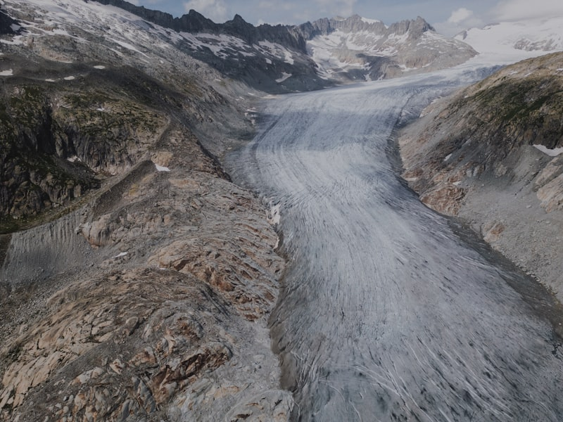
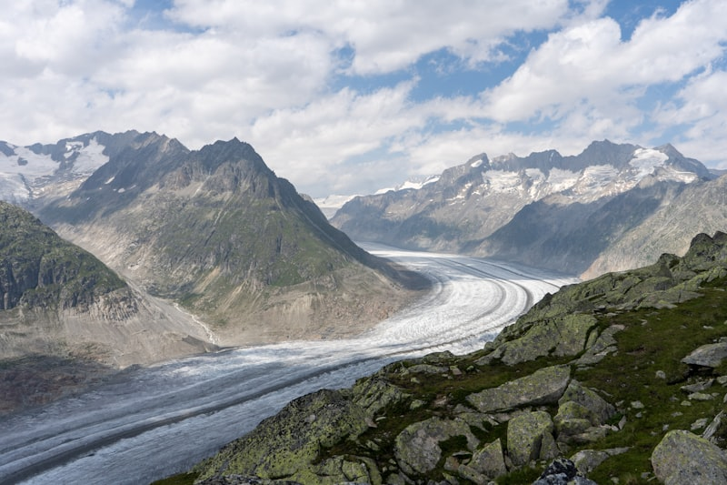

Le Plus Grand Glacier des Alpes
Le glacier d'Aletsch s'étend sur 22 kilomètres depuis ses zones d'accumulation sous les sommets de la Jungfrau, du Mönch et du Jungfraujoch jusqu'à la vallée du Rhône. Sa superficie totale dépasse 80 km² et son volume représente environ 27 km³ de glace — une masse considérable qui s'écoule lentement vers le bas de la vallée à raison de quelques centaines de mètres par an.
Sa dynamique exceptionnelle, sa longévité et son accessibilité depuis plusieurs points d'observation en font un site de référence mondial pour l'étude de la glaciologie et du changement climatique alpin.


Anatomie d'un Géant de Glace
Le glacier d'Aletsch est formé de la confluence de trois glaciers tributaires — le Jungfraufirn, le Ewigschneefeld et le Mönchjochfirn — qui se rejoignent au Konkordiaplatz pour former le tronc principal.
Konkordiaplatz
Vaste confluence glaciaire à 2 700 m d'altitude, le Konkordiaplatz est le "cœur" du glacier. C'est là que la glace atteint son épaisseur maximale de 900 m et que les trois branches se rejoignent en un courant puissant et unifié.
Zone d'accumulation
Située entre 3 000 et 4 000 m, cette zone reçoit les précipitations neigeuses annuelles qui, compressées par le poids des couches supérieures, se transforment progressivement en névé puis en glace cristalline.
Front glaciaire et langue
Le front du glacier se situe aujourd'hui vers 1 600 m d'altitude, dans la forêt d'Aletsch. La langue glaciaire s'écoule à environ 180 m par an, déposant à son front les matériaux arrachés aux parois rocheuses.
Histoire et Changement Climatique
Depuis le maximum du Petit Âge Glaciaire en 1860, le glacier d'Aletsch recule de manière significative, offrant un témoignage concret du réchauffement climatique.
Maximum du Petit Âge Glaciaire
Le glacier atteint son extension maximale depuis le Würm. Le front glaciaire descend jusqu'à environ 1 390 m, recouvrant une superficie bien supérieure à celle d'aujourd'hui. Des villages sont menacés par les avancées glaciaires.
Début du retrait
Le réchauffement climatique post-industriel enclenche un retrait progressif mais régulier. Les premières mesures systématiques de longueur et d'épaisseur commencent à être enregistrées par les scientifiques.
Inscription UNESCO
Le site Jungfrau-Aletsch est inscrit au patrimoine mondial de l'UNESCO, notamment en raison de la valeur scientifique du glacier comme indicateur du changement climatique mondial.
Accélération du recul
Depuis les années 1990, le rythme de retrait s'est fortement accéléré. Le glacier a perdu plus de 3 km de longueur depuis 1870 et son épaisseur diminue à un rythme croissant — environ 50 m de perte cumulée en 150 ans.
Projections climatiques
Selon les modèles du GIEC et des glaciologues de l'ETHZ, le glacier d'Aletsch pourrait perdre entre 50 % et 90 % de son volume d'ici 2100, selon les scénarios d'émissions de gaz à effet de serre.
Dans le scénario le plus pessimiste (RCP 8.5), le glacier pourrait avoir quasi disparu à la fin du siècle, transformant radicalement le paysage et les écosystèmes dépendants de l'eau glaciaire.
Points d'Observation
Plusieurs sites offrent des panoramas spectaculaires sur le glacier d'Aletsch, accessibles par téléphérique ou à pied selon les saisons.
Eggishorn (2 927 m)
Vue plongeante sur tout le glacier depuis le sommet. Accès en téléphérique depuis Fiesch. Le panorama embrasse les 22 km du glacier et le Konkordiaplatz depuis une position idéale.
Moosfluh (2 333 m)
Accessible en télésiège depuis Riederalp, ce belvédère offre une vue remarquable sur la rive droite du glacier et sur les moraines latérales. Le Centre Pro Natura Aletsch se trouve à proximité.
Jungfraujoch (3 454 m)
Depuis le "Top of Europe", vue unique sur la zone d'accumulation du glacier et le Konkordiaplatz. Accès en train crémaillère depuis Grindelwald ou Lauterbrunnen par le Jungfraubahn.
Belalp (2 094 m)
Départ de sentiers permettant de rejoindre les moraines et le front glaciaire à pied. Vue sur le bas du glacier et les forêts primaires d'Aletsch qui colonisent progressivement les zones libérées par la glace.

World Nature Forum
Basé à Naters (VS), le World Nature Forum est un centre d'exposition et de sensibilisation dédié au patrimoine mondial UNESCO Jungfrau-Aletsch. Il accueille expositions permanentes, conférences scientifiques et programmes pédagogiques sur le glacier et son évolution.
Ouvert toute l'année, il constitue le point de départ idéal pour comprendre les enjeux climatiques liés au recul du glacier d'Aletsch et au changement global qui affecte les Alpes.